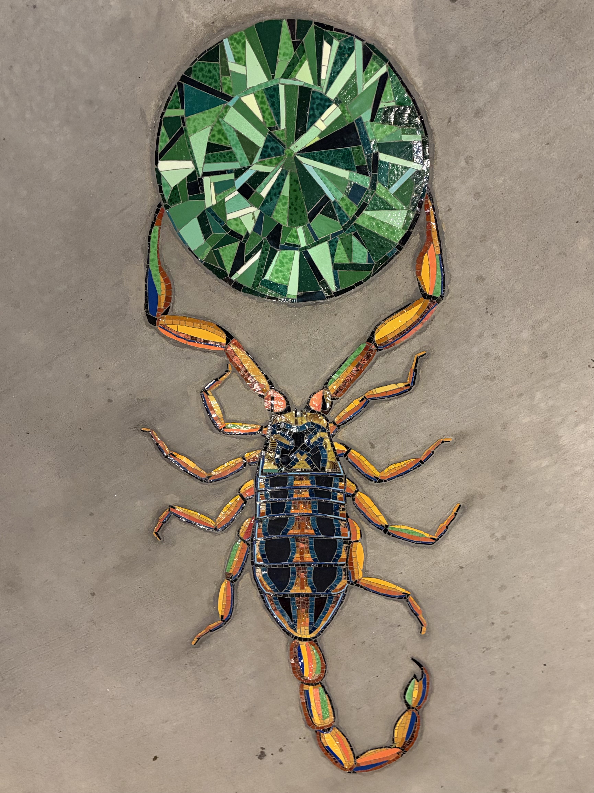
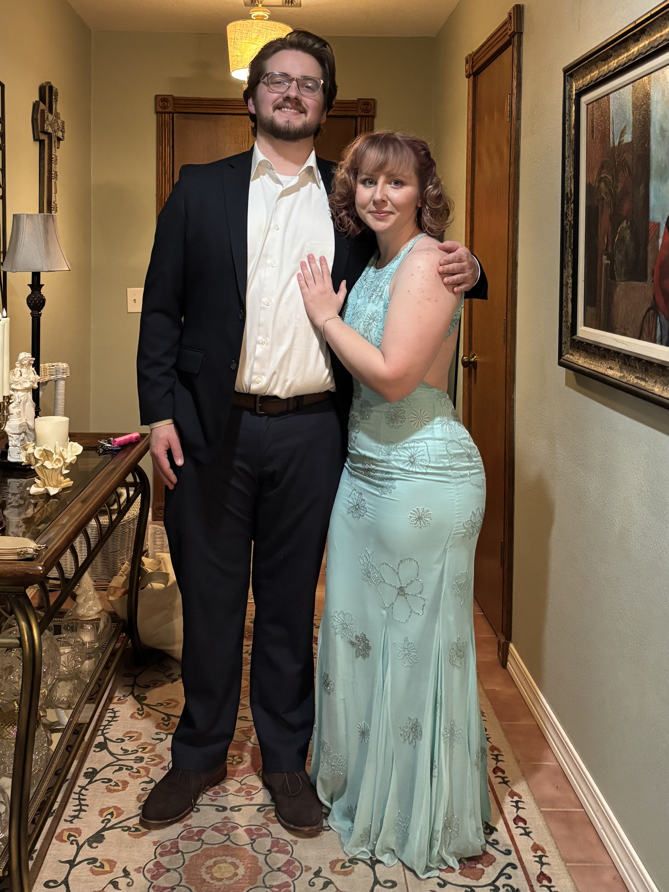
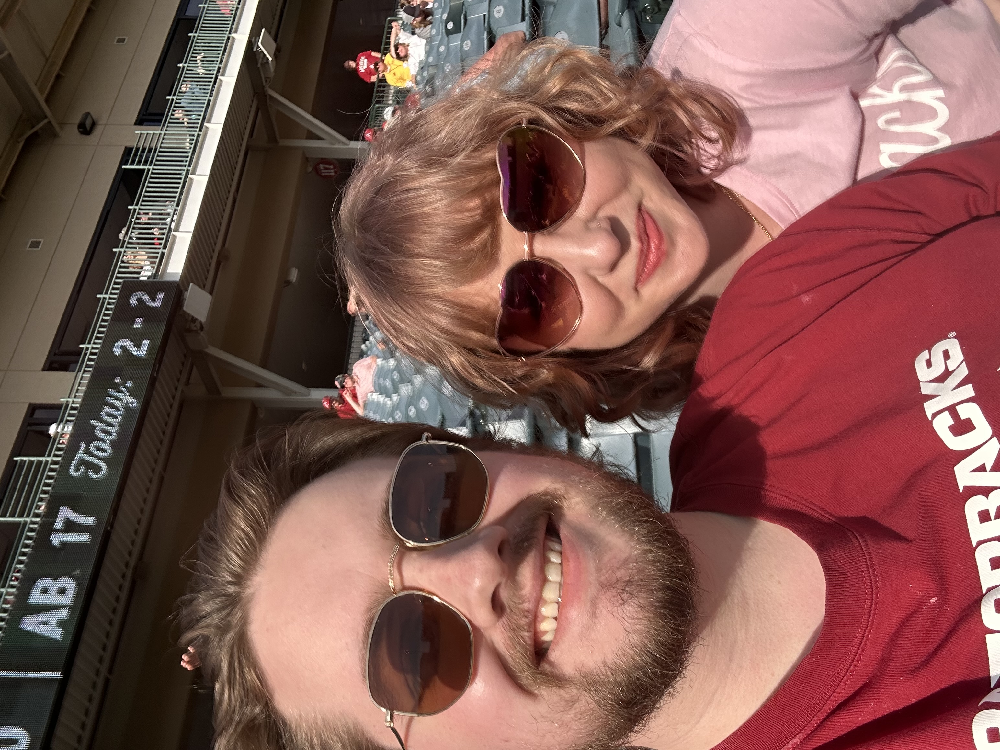
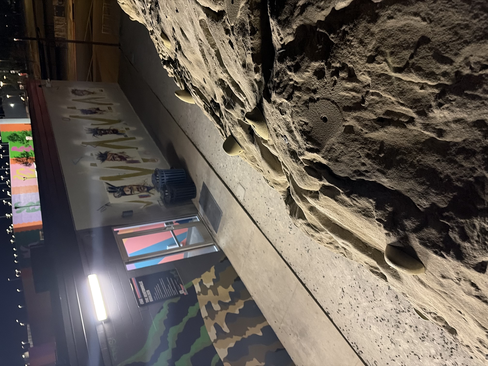
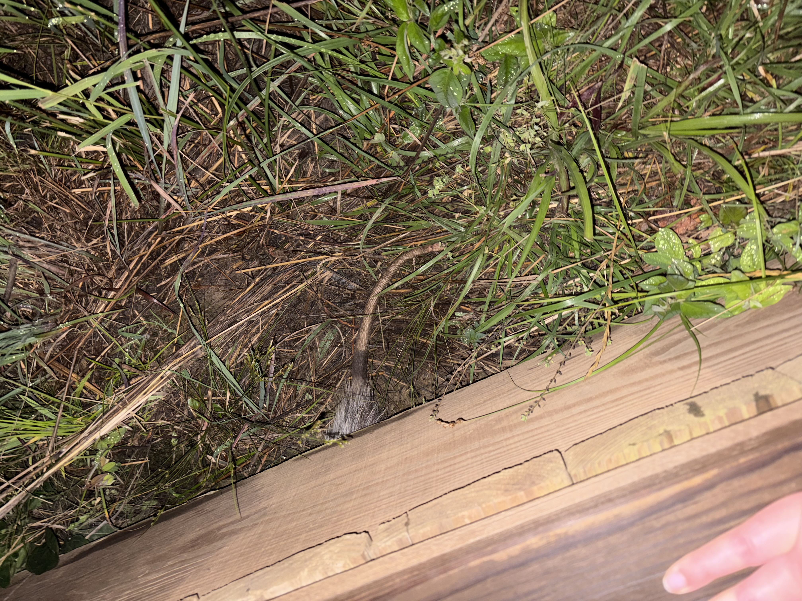

January 11, 2026
We met at Sestina, a restaurant in downtown Bentonville.

Olive oil cake. It tasted like olive oil.
When I got home I wrote the following in my journal:
met him for dinner. he was dressed very nicely. we enjoyed drinks, appetizer, entree, & dessert.
we stayed & talked nearly 5 hours. we only left because the restaurant was closing.
hoping to see him again.
January 18, 2026
For our second date we did the classic get coffee then rummage in an antique store.

We joked that the sad fate of this antique cabinet was to be purchased by a millenial and painted white.
The following is an excerpt from my journal:
he picked me up @ 9 & he held the passenger door for me. we went to Calmo, a little coffee shop
& he bought me a coffee. afterward we went to Rose Antique Mall. had a lot of fun.
i like him!
January 21, 2026
We went on two dates in one day.


Bug mosaics at the Ledger we encountered during our walkabout.
From my journal:
he picked me up & we went to Crystal Bridges until i had to go to work.
he picked me up from work after i got off & we went to Co-op Ramen. afterward we walked
to downtown Bentonville to get ice cream. we walked around a few hours.
when he brought me home he kissed me!
February 10, 2026
For Valentine's Day we had dinner at Callisto.

Myy grandma hastily snapped this picture as we were walking out the door.

We definitely drank too much.

Logan practically had to beg me to wear this dress.
March 18, 2026
We went to a baseball game.

"Obligatory selfie" we took to send his mom.
We got to the game late because I'd had a doctor's appointment just before.
They had to do a lot of bloodwork on me. Felt like I was going to pass out the entire time.
Razorbacks won of course.
March 25, 2026
For my birthday Logan planned a trip to Springfield, MO. After a two night stay we went to
Dogwood Canyon, and then Silver Dollar City.

We turned into legos!


Saw some beautiful scenery. Oh, and some waterfalls.
My only regret is not taking more pictures.
April 6, 2026
After eating sandwiches at Archie's and walking the drunken mile back to where
I work we said "I love you" for the first time.

Sadly the only photo documentation I have of this day is the picture I took from the top
of the boulder at 8th St Market. It has since been torn down.
April 7, 2026
Dinner at Blu Fish House.

You know what they say about raw oysters.
April 19, 2026
Went to Conifer to see the man in action.

Logan describing what he has prepared. I am listening intently.

Yummy dessert he made. Strawberry and rhubarb cake.

Logan running the show!
May 6, 2026
We went to Bloom Cheese Collective. We also went to the library to explore Logan's genealogical records,
Dickson street bookstore, and Spoon Korea Fusion.

The illustrious coochie board.
May 11, 2026
Chili's for chips and queso.


Getting marged up on a Monday!
May 25, 2026
Had a creek adventure.

Happy Memorial Day!
RIP Logan's shoes.
May 28, 2026
Late night exploration at Osage Park. We saw a rabbit, a beaver, an armadillo, and a possum.

But the possum is the only creature I have photo evidence of.
May 31, 2026
We went to a blueberry patch.


Pickin' berries.
June 2, 2026
Two pools in one day!
Wilson Park Pool in Fayetteville, AR and Rogers Aquatic Center in Rogers, AR.

Flip flop swap.

Logan tanning.
June 9, 2026
Dinner date at Bar Cleeta.


Another olive oil cake we had to try.
Home